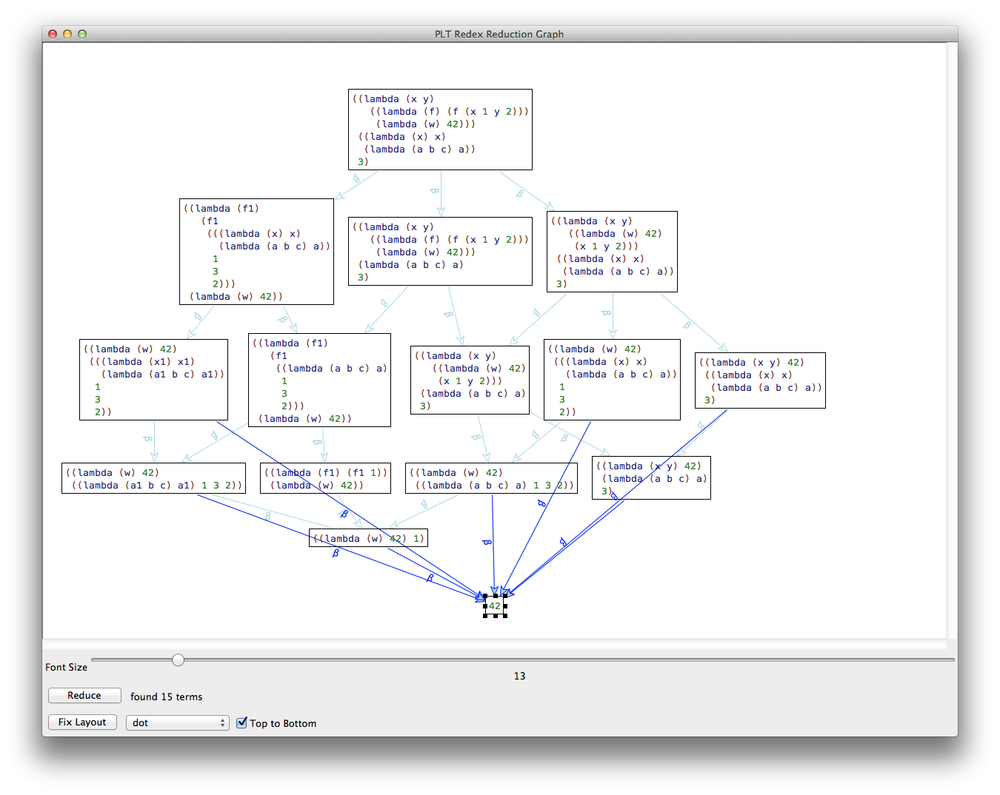

2 Long Tutorial
This tutorial is derived from a week-long Redex summer school, run July 27–31, 2015 at the University of Utah.
2.1 The Theoretical Framework
Goals |
— |
— |
— |
— |
— |
— |
— |
The lambda calculus:
e = x | (\x.e) | (e e)
Terms vs trees, abstract over concrete syntax
Encode some forms of primitives: numbers, booleans – good for theory of computation; mostly irrelevant for PL. extensions with primitive data
e = x | (\x.e) | (e e) | tt | ff | (if e e e)
What we want: develop LC as a model of a PL. Because of history, this means two things: a simple logic for calculating with the terms of the language e == e’ and a system for determining the value of a program. The former is the calculus, the latter is the semantics.
Both start with basic notions of reduction (axioms). They are just relation on terms:
((\x.e) e’) beta e[x=e’]
((\x.e) e’) beta [e’/x]e
Think substitution via tree surgery, preserving bindings
Here are two more, often done via external interpretation functions (δ)
(if tt e e’) if-tt e
(if ff e e’) if-ff e’
If this is supposed to be a theory of functions (and if expressions) we need to be able to use this relations in context
e xyz e' |
-------------- |
e = e' |
|
e = e' e = e' e = e' |
-------------- -------------- -------------- |
e e'' = e' e'' e'' e = e'' e' \x.e = \x.e' |
|
plus reflexivity, symmetry, and transitivity |
Now you have an equational system. what’s it good for? you can prove such facts as
e (Y e) = (Y e)
meaning every single term has a fixpoint
All of the above is mathematics but it is just that, mathematics. It might be considered theory of computation, but it is not theory of programming languages. But we can use these ideas to create a theory of programming languages. Plotkin’s 1974 TCS paper on call-by-name versus call-by-value shows how to create a theory of programming languages.
In addition, Plotkin’s paper also sketches several research programs, mostly on scaling up his ideas to the full spectrum of languages but also on the precise connection between by-value and by-name their relationship, both at the proof-theoretical level as well as at the model-theoretic level.
Start from an abstract syntax, plus notions of scope and scope-preserving substitution. Consider closed terms Programs.
Identify a subset of expressions as Values. Use v to range over Values.
Note The complement of this set was (later) dubbed computations, due to Moggi’s work under Plotkin.
Define basic notions of reduction (axioms). Examples:
((\x.e) e’) beta-name e[x=e’]
((\x.e) v) beta-value e[x=v]
Inductively generate an equational theory from the basic notions of reduction.
This theory defines a semantics, that is, a relation eval from programs to values:
eval : Program x Value
def e eval v iff e = v
Prove that eval is a function, and you have got yourself a specification of an interpreter.
eval : Program -> Value
eval(e) = v
Note This step often reuses a variant of the Church-Rosser theorem of the mathematical theory of lambda calculus.
Prove that the calculus satisfies a Curry-Feys standard reduction property. This gives you a second semantics:
eval-standard : Program -> Value
def eval-standard(e) = v iff e standard reduces to v
The new semantics is correct:Theorem eval-standard = eval
Standard reduction is a strategy for the lambda calculus, that is, a function that picks the next reducible expression (called redex) to reduce. Plotkin specifically uses the leftmost-outermost strategy but others may work, too.
The interpreter of a programming language (non-constructively) generates a theory of equivalence on phrases.
def e ~ e’ iff placing e and e’ into any context yields programs that produce the same observable behavior according to eval
Theorem ~ is the coarsest equivalence theory and thus unique.
Theorem e = e’ implies e ~ e’. Naturally the reverse doesn’t hold.
Plotkin’s “algorithm” applies to imperative programming language, especially those extending the lambda calculus syntax with (variable) assignment and non-local control operators.
Imperative Extensions explains how two of these work.
It is possible to derive useful abstract register machines from the standard reduction semantics of the programming language
Each machine M defines a new semantics:def eval-M(e) = v iff load M with e, run, unload, yields v
For each of these functions, we can prove an equivalence theorem.
Theorem eval-M = eval-standard = eval
2.2 Syntax and Metafunctions
Goals |
— |
— |
— |
— |
— |
2.2.1 Developing a Language
(define-language Lambda (e ::= x (lambda (x ...) e) (e e ...)) (x ::= variable-not-otherwise-mentioned))
We can include literal numbers (all of Racket’s numbers, including complex)
or integers (all of Racket’s integers) or naturals (all of Racket’s natural
numbers)—
> (define e1 (term y)) > (define e2 (term (lambda (y) y))) > (define e3 (term (lambda (x y) y))) > (define e4 (term (,e2 ,e3))) > e4 '((lambda (y) y) (lambda (x y) y))
(redex-match? Lambda e e4)
(define lambda? (redex-match? Lambda e))
(test-equal (lambda? e1) #true) (test-equal (lambda? e2) #true) (test-equal (lambda? e3) #true) (test-equal (lambda? e4) #true) (define eb1 (term (lambda (x x) y))) (define eb2 (term (lambda (x y) 3))) (test-equal (lambda? eb1) #false) (test-equal (lambda? eb2) #false) (test-results)
2.2.2 Developing Metafunctions
To make basic statements about (parts of) your language, define metafunctions. Roughly, a metafunction is a function on the terms of a specific language.
(define-metafunction Lambda unique-vars : x ... -> boolean)
(define-metafunction Lambda unique-vars : x ... -> boolean [(unique-vars) #true] [(unique-vars x x_1 ... x x_2 ...) #false] [(unique-vars x x_1 ...) (unique-vars x_1 ...)])
But, don’t just define metafunctions, develop them properly: state what they are about, work through examples, write down the latter as tests, then define the function.
; are the identifiers in the given sequence unique? (module+ test (test-equal (term (unique-vars x y)) #true) (test-equal (term (unique-vars x y x)) #false)) (define-metafunction Lambda unique-vars : x ... -> boolean [(unique-vars) #true] [(unique-vars x x_1 ... x x_2 ...) #false] [(unique-vars x x_1 ...) (unique-vars x_1 ...)]) (module+ test (test-results))
Sadly, our language definition cannot use the unique-vars metafunction. (In order to define the metafunction, we first need to define the language.)
(define-language Lambda (e ::= x (lambda (x_!_ ...) e) (e e ...)) (x ::= variable-not-otherwise-mentioned))
; (subtract (x ...) x_1 ...) removes x_1 ... from (x ...) (module+ test (test-equal (term (subtract (x y z x) x z)) (term (y)))) (define-metafunction Lambda subtract : (x ...) x ... -> (x ...) [(subtract (x ...)) (x ...)] [(subtract (x ...) x_1 x_2 ...) (subtract (subtract1 (x ...) x_1) x_2 ...)]) ; (subtract1 (x ...) x_1) removes x_1 from (x ...) (module+ test (test-equal (term (subtract1 (x y z x) x)) (term (y z)))) (define-metafunction Lambda subtract1 : (x ...) x -> (x ...) [(subtract1 (x_1 ... x x_2 ...) x) (x_1 ... x_2new ...) (where (x_2new ...) (subtract1 (x_2 ...) x)) (where #false (in x (x_1 ...)))] [(subtract1 (x ...) x_1) (x ...)]) (define-metafunction Lambda in : x (x ...) -> boolean [(in x (x_1 ... x x_2 ...)) #true] [(in x (x_1 ...)) #false])
2.2.3 Developing a Language 2
; (fv e) computes the sequence of free variables of e ; a variable occurrence of x is free in e ; if no (lambda (... x ...) ...) dominates its occurrence (module+ test (test-equal (term (fv x)) (term (x))) (test-equal (term (fv (lambda (x) x))) (term ())) (test-equal (term (fv (lambda (x) (y z x)))) (term (y z)))) (define-metafunction Lambda fv : e -> (x ...) [(fv x) (x)] [(fv (lambda (x ...) e)) (subtract (x_e ...) x ...) (where (x_e ...) (fv e))] [(fv (e_f e_a ...)) (x_f ... x_a ... ...) (where (x_f ...) (fv e_f)) (where ((x_a ...) ...) ((fv e_a) ...))])
You may know it as the de Bruijn index representation.
; (sd e) computes the static distance version of e (define-extended-language SD Lambda (e ::= .... (K n)) (n ::= natural)) (define sd1 (term (K 1))) (define sd2 (term 1)) (define SD? (redex-match? SD e)) (module+ test (test-equal (SD? sd1) #true))
(define-metafunction SD sd : e -> e [(sd e_1) (sd/a e_1 ())]) (module+ test (test-equal (term (sd/a x ())) (term x)) (test-equal (term (sd/a x ((y) (z) (x)))) (term (K 2 0))) (test-equal (term (sd/a ((lambda (x) x) (lambda (y) y)) ())) (term ((lambda () (K 0 0)) (lambda () (K 0 0))))) (test-equal (term (sd/a (lambda (x) (x (lambda (y) y))) ())) (term (lambda () ((K 0 0) (lambda () (K 0 0)))))) (test-equal (term (sd/a (lambda (z x) (x (lambda (y) z))) ())) (term (lambda () ((K 0 1) (lambda () (K 1 0))))))) (define-metafunction SD sd/a : e ((x ...) ...) -> e [(sd/a x ((x_1 ...) ... (x_0 ... x x_2 ...) (x_3 ...) ...)) ; bound variable (K n_rib n_pos) (where n_rib ,(length (term ((x_1 ...) ...)))) (where n_pos ,(length (term (x_0 ...)))) (where #false (in x (x_1 ... ...)))] [(sd/a (lambda (x ...) e_1) (e_rest ...)) (lambda () (sd/a e_1 ((x ...) e_rest ...)))] [(sd/a (e_fun e_arg ...) (e_rib ...)) ((sd/a e_fun (e_rib ...)) (sd/a e_arg (e_rib ...)) ...)] [(sd/a e_1 e) ; a free variable is left alone e_1])
; (=α e_1 e_2) determines whether e_1 and e_2 are α equivalent (define-extended-language Lambda/n Lambda (e ::= .... n) (n ::= natural)) (define in-Lambda/n? (redex-match? Lambda/n e)) (module+ test (test-equal (term (=α (lambda (x) x) (lambda (y) y))) #true) (test-equal (term (=α (lambda (x) (x 1)) (lambda (y) (y 1)))) #true) (test-equal (term (=α (lambda (x) x) (lambda (y) z))) #false)) (define-metafunction SD =α : e e -> boolean [(=α e_1 e_2) ,(equal? (term (sd e_1)) (term (sd e_2)))]) (define (=α/racket x y) (term (=α ,x ,y)))
2.2.4 Extending a Language: any
(define-extended-language SD Lambda (e ::= .... true false (if e e e)))
We want metafunctions that are as generic as possible for computing such notions as free variable sequences, static distance, and alpha equivalences.
(module+ test (test-equal (SD? sd1) #true)) (define-metafunction SD sd : any -> any [(sd any_1) (sd/a any_1 ())]) (module+ test (test-equal (term (sd/a x ())) (term x)) (test-equal (term (sd/a x ((y) (z) (x)))) (term (K 2 0))) (test-equal (term (sd/a ((lambda (x) x) (lambda (y) y)) ())) (term ((lambda () (K 0 0)) (lambda () (K 0 0))))) (test-equal (term (sd/a (lambda (x) (x (lambda (y) y))) ())) (term (lambda () ((K 0 0) (lambda () (K 0 0)))))) (test-equal (term (sd/a (lambda (z x) (x (lambda (y) z))) ())) (term (lambda () ((K 0 1) (lambda () (K 1 0))))))) (define-metafunction SD sd/a : any ((x ...) ...) -> any [(sd/a x ((x_1 ...) ... (x_0 ... x x_2 ...) (x_3 ...) ...)) ; bound variable (K n_rib n_pos) (where n_rib ,(length (term ((x_1 ...) ...)))) (where n_pos ,(length (term (x_0 ...)))) (where #false (in x (x_1 ... ...)))] [(sd/a (lambda (x ...) any_1) (any_rest ...)) (lambda () (sd/a any_1 ((x ...) any_rest ...)))] [(sd/a (any_fun any_arg ...) (any_rib ...)) ((sd/a any_fun (any_rib ...)) (sd/a any_arg (any_rib ...)) ...)] [(sd/a any_1 any) ; free variable, constant, etc any_1])
2.2.5 Substitution
The last thing we need is substitution, because it is the syntactic equivalent of function application. We define it with any having future extensions in mind.
; (subst ([e x] ...) e_*) substitutes e ... for x ... in e_* (hygienically) (module+ test (test-equal (term (subst ([1 x][2 y]) x)) 1) (test-equal (term (subst ([1 x][2 y]) y)) 2) (test-equal (term (subst ([1 x][2 y]) z)) (term z)) (test-equal (term (subst ([1 x][2 y]) (lambda (z w) (x y)))) (term (lambda (z w) (1 2)))) (test-equal (term (subst ([1 x][2 y]) (lambda (z w) (lambda (x) (x y))))) (term (lambda (z w) (lambda (x) (x 2)))) #:equiv =α/racket) (test-equal (term (subst ((2 x)) ((lambda (x) (1 x)) x))) (term ((lambda (x) (1 x)) 2)) #:equiv =α/racket)) (define-metafunction Lambda subst : ((any x) ...) any -> any [(subst [(any_1 x_1) ... (any_x x) (any_2 x_2) ...] x) any_x] [(subst [(any_1 x_1) ...] x) x] [(subst [(any_1 x_1) ...] (lambda (x ...) any_body)) (lambda (x_new ...) (subst ((any_1 x_1) ...) (subst-raw ((x_new x) ...) any_body))) (where (x_new ...) ,(variables-not-in (term any_body) (term (x ...))))] [(subst [(any_1 x_1) ...] (any ...)) ((subst [(any_1 x_1) ...] any) ...)] [(subst [(any_1 x_1) ...] any_*) any_*]) (define-metafunction Lambda subst-raw : ((x x) ...) any -> any [(subst-raw ((x_n1 x_o1) ... (x_new x) (x_n2 x_o2) ...) x) x_new] [(subst-raw ((x_n1 x_o1) ...) x) x] [(subst-raw ((x_n1 x_o1) ...) (lambda (x ...) any)) (lambda (x ...) (subst-raw ((x_n1 x_o1) ...) any))] [(subst-raw [(any_1 x_1) ...] (any ...)) ((subst-raw [(any_1 x_1) ...] any) ...)] [(subst-raw [(any_1 x_1) ...] any_*) any_*])
}
2.3 Lab Designing Metafunctions
Goals |
— |
— |
(require "common.rkt")
Exercises
Exercise 1. Design bv. The metafunction determines the bound variables in a Lambda expression. A variable x is bound in e_Lambda if x occurs in a lambda-parameter list in e_Lambda.
Exercise 2. Design lookup. The metafunction consumes a variable and an environment. It determines the leftmost expression associated with the variable; otherwise it produces #false.
(define-extended-language Env Lambda (e ::= .... natural) (env ::= ((x e) ...))) The language extension also adds numbers of the sub-language of expressions.Before you get started, make sure you can create examples of environments and confirm their well-formedness.
Exercise 3. Develop the metafunction let, which extends the language with a notational shorthand, also known as syntactic sugar.
Once you have this metafunction, you can write expressions such asLike Racket’s let, the function elaborates surface syntax into core syntax:Since this elaboration happens as the term is constructed, all other metafunctions work as expected on this extended syntax. For example,orproduces the expected results. What are those?
2.4 Reductions and Semantics
Goals |
— |
— |
— |
— |
Note These notes deal with the λβ calculus, specifically its reduction system.
notation
meaning
x
basic notion of reduction, without properties
-->x
one-step reduction, generated from x, compatible with syntactic constructions
-->>x
reduction, generated from -->x, transitive here also reflexive
=x
“calculus”, generated from -->x, symmetric, transitive, reflexive
2.4.1 Contexts, Values
The logical way of generating an equivalence (or reduction) relation over terms uses through inductive inference rules that make the relation compatible with all syntactic constructions.
(require "common.rkt") (define-extended-language Lambda-calculus Lambda (e ::= .... n) (n ::= natural) (v ::= (lambda (x ...) e)) ; a context is an expression with one hole in lieu of a sub-expression (C ::= hole (e ... C e ...) (lambda (x_!_ ...) C))) (define Context? (redex-match? Lambda-calculus C)) (module+ test (define C1 (term ((lambda (x y) x) hole 1))) (define C2 (term ((lambda (x y) hole) 0 1))) (test-equal (Context? C1) #true) (test-equal (Context? C2) #true))
(module+ test (define e1 (term (in-hole ,C1 1))) (define e2 (term (in-hole ,C2 x))) (test-equal (in-Lambda/n? e1) #true) (test-equal (in-Lambda/n? e2) #true))
2.4.2 Reduction Relations
Developing a reduction relation is like developing a function. Work through examples first. A reduction relation does not have to be a function, meaning it may reduce one and the same term to distinct terms.
; the λβ calculus, reductions only (module+ test ; does the one-step reduction reduce both β redexes? (test--> -->β #:equiv =α/racket (term ((lambda (x) ((lambda (y) y) x)) z)) (term ((lambda (x) x) z)) (term ((lambda (y) y) z))) ; does the full reduction relation reduce all redexes? (test-->> -->β (term ((lambda (x y) (x 1 y 2)) (lambda (a b c) a) 3)) 1)) (define -->β (reduction-relation Lambda-calculus (--> (in-hole C ((lambda (x_1 ..._n) e) e_1 ..._n)) (in-hole C (subst ([e_1 x_1] ...) e)))))
(traces -->β (term ((lambda (x y) ((lambda (f) (f (x 1 y 2))) (lambda (w) 42))) ((lambda (x) x) (lambda (a b c) a)) 3)))

(define -->βv (reduction-relation Lambda-calculus (--> (in-hole C ((lambda (x_1 ..._n) e) v_1 ..._n)) (in-hole C (subst ([v_1 x_1] ...) e)))))
2.4.3 Semantics
(define-extended-language Standard Lambda-calculus (v ::= n (lambda (x ...) e)) (E ::= hole (v ... E e ...))) (module+ test (define t0 (term ((lambda (x y) (x y)) ((lambda (x) x) (lambda (x) x)) ((lambda (x) x) 5)))) (define t0-one-step (term ((lambda (x y) (x y)) (lambda (x) x) ((lambda (x) x) 5)))) ; yields only one term, leftmost-outermost (test--> s->βv t0 t0-one-step) ; but the transitive closure drives it to 5 (test-->> s->βv t0 5)) (define s->βv (reduction-relation Standard (--> (in-hole E ((lambda (x_1 ..._n) e) v_1 ..._n)) (in-hole E (subst ((v_1 x_1) ...) e)))))
(module+ test (test-equal (term (eval-value ,t0)) 5) (test-equal (term (eval-value ,t0-one-step)) 5) (define t1 (term ((lambda (x) x) (lambda (x) x)))) (test-equal (lambda? t1) #true) (test-equal (redex-match? Standard e t1) #true) (test-equal (term (eval-value ,t1)) 'closure)) (define-metafunction Standard eval-value : e -> v or closure [(eval-value e) any_1 (where any_1 (run-value e))]) (define-metafunction Standard run-value : e -> v or closure [(run-value n) n] [(run-value v) closure] [(run-value e) (run-value e_again) ; (v) means that we expect s->βv to be a function (where (e_again) ,(apply-reduction-relation s->βv (term e)))])
2.4.4 What are Models
Good models of programming languages are like Newtonian models of how you drive a car. As long as your speed is within a reasonable interval, the model accurately predicts how your car behaves. Similarly, as long as your terms are within a reasonable subset (the model’s language), the evaluator of the model and the evaluator of the language ought to agree.
(define-namespace-anchor A) (define N (namespace-anchor->namespace A)) ; Lambda.e -> Number or 'closure or exn (define (racket-evaluator t0) (define result (with-handlers ((exn:fail? values)) (eval t0 N))) (cond [(number? result) result] [(procedure? result) (term closure)] [else (make-exn "hello world" (current-continuation-marks))]))
(define-metafunction Standard theorem:racket=eval-value : e -> boolean [(theorem:racket=eval-value e) ,(letrec ([rr (racket-evaluator (term e))] [vr (term (run-value e))]) (cond [(and (exn? rr) (eq? (term stuck) vr)) #true] [(exn? rr) #false] [(eq? (term stuck) vr) #false] [else (equal? vr rr)]))])
(module+ test (test-equal (term (racket=eval-value ,t0)) #true) (test-equal (term (racket=eval-value ,t0-one-step)) #true) (test-equal (term (racket=eval-value ,t1)) #true))
(redex-check Standard e (term (theorem:racket=eval-value e)))
2.5 Lab Designing Reductions
Goals |
— |
— |
(require "common.rkt")
Also require "close.rkt" for the fv function.
(define-extended-language Lambda-η Lambda (e ::= .... n) (n ::= natural) (C ::= hole (e ... C e ...) (lambda (x_!_ ...) C)) (v ::= n (lambda (x ...) e))) (define -->β (reduction-relation Lambda-η (--> (in-hole C ((lambda (x_1 ..._n) e) e_1 ..._n)) (in-hole C (subst ([e_1 x_1] ...) e)) β))) (define lambda? (redex-match? Lambda-calculus e))
Exercises
Exercise 4. Develop a βη reduction relation for Lambda-η.
Find a term that contains both a β- and an η-redex. Formulate a Redex test that validates this claim. Also use trace to graphically validate the claim.
Develop the β and βη standard reduction relations. Hint Look up extend-reduction-relation to save some work.
Use the standard reduction relations to formulate a semantics for both variants. The above test case, reformulated for the standard reduction, must fail. Why? Note The semantics for βη requires some experimentation. Justify your non-standard definition of the run function.
The βη semantics is equivalent to the β variant. Formulate this theorem as a metafunction. Use redex-check to test your theorem.
Note Why does it make no sense to add η to this system?
Exercise 5. Extend the by-value language with an addition operator.
Equip both the βv reduction system and the βv standard reduction with rules that assign addition the usual semantics. Finally define a semantics functions for this language.
Hint Your rules need to escape to Racket and use its addition operator.
2.6 Types and Property Testing
Goals |
— |
— |
— |
2.6.1 Types
(define-language TLambda (e ::= n + x (lambda ((x_!_ t) ...) e) (e e ...)) (t ::= int (t ... -> t)) (x ::= variable-not-otherwise-mentioned)) (define lambda? (redex-match? TLambda e)) (define e1 (term (lambda ((x int) (f (int -> int))) (+ (f (f x)) (f x))))) (define e2 (term (lambda ((x int) (f ((int -> int) -> int))) (f x)))) (define e3 (term (lambda ((x int) (x (int -> int))) x))) (module+ test (test-equal (lambda? e1) #true) (test-equal (lambda? e2) #true) (test-equal (in-TLambda? e3) #false))
2.6.2 Developing Type Judgments
Like metafunctions and reduction relations, type judgments are developed by working out examples, formulating tests, and then articulating the judgment rules:
; (⊢ Γ e t) – the usual type judgment for an LC language (define-extended-language TLambda-tc TLambda (Γ ::= ((x t) ...))) (module+ test (test-equal (judgment-holds (⊢ () ,e1 (int (int -> int) -> int))) #true) (test-equal (judgment-holds (⊢ () ,e2 t)) #false) (displayln (judgment-holds (⊢ () ,e1 t) t)) (displayln (judgment-holds (⊢ () ,e2 t) t))) (define-judgment-form TLambda-tc #:mode (⊢ I I O) #:contract (⊢ Γ e t) [----------------------- "number" (⊢ Γ n int)] [----------------------- "+" (⊢ Γ + (int int -> int))] [----------------------- "variable" (⊢ Γ x (lookup Γ x))] [(⊢ (extend Γ (x_1 t_1) ...) e t) ------------------------------------------------- "lambda" (⊢ Γ (lambda ((x_1 t_1) ...) e) (t_1 ... -> t))] [(⊢ Γ e_1 (t_2 ... -> t)) (⊢ Γ e_2 t_2) ... ------------------------------------------------- "application" (⊢ Γ (e_1 e_2 ...) t)])
; (extend Γ (x t) ...) add (x t) to Γ so that x is found before other x-s (module+ test (test-equal (term (extend () (x int))) (term ((x int))))) (define-metafunction TLambda-tc extend : Γ (x t) ... -> Γ [(extend ((x_Γ t_Γ) ...) (x t) ...) ((x t) ...(x_Γ t_Γ) ...)]) ; (lookup Γ x) retrieves x's type from Γ (module+ test (test-equal (term (lookup ((x int) (x (int -> int)) (y int)) x)) (term int)) (test-equal (term (lookup ((x int) (x (int -> int)) (y int)) y)) (term int))) (define-metafunction TLambda-tc lookup : Γ x -> t [(lookup ((x_1 t_1) ... (x t) (x_2 t_2) ...) x) t (side-condition (not (member (term x) (term (x_1 ...)))))] [(lookup any_1 any_2) ,(error 'lookup "not found: ~e" (term x))])
2.6.3 Subjection Reduction
(define -> (reduction-relation TLambda #:domain e (--> e (lambda ((x int)) x))))
(traces -> (term (((lambda ((x (int -> int))) x) (lambda ((x int)) x)) 1)) #:pred (lambda (e) (judgment-holds (⊢ () ,e int))))

(redex-check TLambda e (implies (judgment-holds (⊢ () e int)) (judgment-holds (⊢ () (eval-value e) int))) #:attempts 3)
2.7 Lab Type Checking
Goals |
— |
— |
(require "common.rkt")
In addition to "common.rkt", you also want to require "tc-common.rkt" for this lab. Furthermore, if you copy code from Types and Property Testing, make sure to copy the tests and to adapt the tests as you develop the machines.
Exercises
Exercise 6. Develop a reduction system for which the trace expression from the lecture preserves types
(module+ test (traces -> (term (((lambda ((x (int -> int))) x) (lambda ((x int)) x)) 1)) #:pred (lambda (e) (judgment-holds (⊢ () ,e int)))))
additional numeric operators, say, multiplication, subtraction, and division;
let expressions;
Boolean constants plus strict and and or operators as well as a branching construct;
lists, specifically constructors and selectors (de-constructors);
explicitly recursive function definitions.
Completing the above list is an ambitious undertaking, but do try to complete at least two or three of these tasks.
2.8 Imperative Extensions
Goals |
— |
— |
— |
— |
2.8.1 Variable Assignment
; (let ((x_1 x_2) ...) e_1 e_2) binds the current value of x_2 to x_1, ; evaluates e_1, throws away its value, and finally evaluates e_2 (define-metafunction Assignments let : ((x e) ...) e e -> e [(let ([x_lhs e_rhs] ...) e_1 e_2) ((lambda (x_lhs ...) ((lambda (x_dummy) e_2) e_1)) e_rhs ...) (where (x_dummy) ,(variables-not-in (term (e_1 e_2)) '(dummy)))])
(define e1 (term (lambda (x) (lambda (y) (let ([tmp x]) (set! x (+ y 1)) tmp))))) (define p-1 (term ((,e1 1) 2))) (define e2 (term ((lambda (x) (let ([tmp x]) (set! x y) tmp)) (let ([tmp-z z]) (set! z (+ z 1)) (let ([tmp-y y]) (set! y tmp-z) tmp-y))))) (define p-2 (term ((lambda (y) ((lambda (z) ,e2) 1)) 2)))
(define-extended-language Assignments-s Assignments (E ::= hole (v ... E e ...) (set! x E)) (σ ::= ((x v) ...)) (v ::= n + (void) (lambda (x ...) e))) ; (extend σ x v) adds (x v) to σ (define-metafunction Assignments-s extend : σ (x ...) (any ...) -> σ [(extend ((x any) ...) (x_1 ...) (any_1 ...)) ((x_1 any_1) ... (x any) ...)]) ; — — — — — — — — — — — — — — — — — — — — — — — — — – ; (lookup Γ x) retrieves x's type from Γ (define-metafunction Assignments-s lookup : any x -> any [(lookup ((x_1 any_1) ... (x any_t) (x_2 any_2) ...) x) any_t (side-condition (not (member (term x) (term (x_1 ...)))))] [(lookup any_1 any_2) ,(error 'lookup "not found: ~e in: ~e" (term x) (term any_2))])
(define s->βs (reduction-relation Assignments-s #:domain (e σ) (--> [(in-hole E x) σ] [(in-hole E (lookup σ x)) σ]) (--> [(in-hole E (set! x v)) σ] [(in-hole E (void)) (extend σ (x) (v))]) (--> [(in-hole E (+ n_1 n_2)) σ] [(in-hole E ,(+ (term n_1) (term n_2))) σ]) (--> [(in-hole E ((lambda (x ..._n) e) v ..._n)) σ] [(in-hole E e) (extend σ (x_new ...) (v ...))] (where (x_new ...) ,(variables-not-in (term σ) (term (x ...)))))))
This use of the standard reduction relation is common because most researchers do not need the calculus. Instead they define such a relation and consider it a semantics.
(module+ test (test-equal (term (eval-assignments ,p-1)) 1) (test-equal (term (eval-assignments ,p-2)) 2) (test-equal (term (eval-assignments ,p-c)) (term closure))) (define-metafunction Assignments-s eval-assignments : e -> v or closure [(eval-assignments e) (run-assignments (e ()))]) (define-metafunction Assignments-s run-assignments : (e σ) -> v or closure [(run-assignments (n σ)) n] [(run-assignments (v σ)) closure] [(run-assignments any_1) (run-assignments any_again) (where (any_again) ,(apply-reduction-relation s->βs (term any_1)))] [(run-assignments any) stuck])
2.8.2 Raising Exceptions
When non-local control operators come such as ML’s exceptions come into play, reductions become (evaluation-) context-sensitive.
(define-extended-language Exceptions Lambda (e ::= .... n + (raise e)) (n ::= integer))
(define c1 (term ((lambda (x) (+ 1 (raise (+ 1 x)))) 0))) (define c2 (term (lambda (y) ((lambda (x) (+ 1 (raise (+ (raise -1) x)))) 0))))
(define-extended-language Exceptions-s Exceptions (C ::= hole (e ... C e ...) (lambda (x ...) C) (raise C)) (E ::= hole (v ... E e ...) (raise E)) (v ::= n + (lambda (x ...) e)))
(module+ test (test-->> ->βc c1 (term (raise 1))) (test-->> ->βc c2 (term (lambda (y) (raise -1))))) (define ->βc (reduction-relation Exceptions-s (--> (in-hole C (in-hole E (raise v))) (in-hole C (raise v)) (where #false ,(equal? (term E) (term hole))) ζ) (--> (in-hole C (+ n_1 n_2)) (in-hole C ,(+ (term n_1) (term n_2))) +) (--> (in-hole C ((lambda (x_1 ..._n) e) v_1 ..._n)) (in-hole C (subst ([v_1 x_1] ...) e)) β_v)))
2.9 Lab Contexts and Stores
Goals |
— |
— |
(require "common.rkt")
Also require "extend-lookup.rkt". Feel free to copy code from Imperative Extensions but make sure to add tests.
Exercises
The exercises this morning are puzzles. Try your hands on them, but when you feel stuck, don’t hesitate to request help.
Exercise 8. Develop a reduction relation for assignment statements. Add a letrec syntax to the language like this:
(define-extended-language ImperativeCalculus Assignments (e ::= .... (letrec ((x v) ...) e))) A letrec mutually recursively binds the variables x ... to the values v ... and in e. The addition of letrec internalizes the store into the language. Adapt the existing relations.Develop terms that one-step reduce in several different directions via reductions that model assignment and/or variable derefences. Use trace graphs to demonstrate the idea.
Note This calculus has naturally separated mini-heaps, but your system must extrude the scope of these heaps on occasion (when values are returned) and merge them.
Exercise 9. Develop a standard reduction system and a semantics for exceptions.
Note You need to use evaluation contexts for two distinct purposes.
Exercise 10. Develop a semantics of for a control operator such as callcc.
Request Check with one of us before you embark on this project. We want to make sure that (1) the operator isn’t too difficult and (2) not to easy to implement. We are also available for hints.
2.10 Abstract Machines
Goals |
— |
— |
— |
2.10.1 CC Machine
Observation β and β_v redexes often take place repeatedly in the same evaluation context. On occasion they just add more layers (inside the hole) to the evaluation context. Let’s separate the in-focus expression from the evaluation context. Historically the two have been called control string (C) and control context (C).
(define-extended-language Lambda/v Lambda (e ::= .... n +) (n ::= integer) (v ::= n + (lambda (x ...) e))) (define vv? (redex-match? Lambda/v e)) (define e0 (term ((lambda (x) x) 0))) (define e1 (term ((lambda (x y) x) 1 2))) (module+ test (test-equal (vv? e1) #true) (test-equal (vv? e0) #true)) ; — — — — — — — — — — — — — — — — — — — — — — — — — – ; the CC machine: keep contexts and expression-in-focus apart (define-extended-language CC Lambda/v (E ::= hole ; Note right to left evaluation of application (e ... E v ...))) (module+ test (test-->> -->cc (term [,e0 hole]) (term [0 hole])) (test-->> -->cc (term [,e1 hole]) (term [1 hole]))) (define -->cc (reduction-relation CC #:domain (e E) (--> [(lambda (x ..._n) e) (in-hole E (hole v ..._n))] [(subst ([v x] ...) e) E] CC-β_v) (--> [+ (in-hole E (hole n_1 n_2))] [,(+ (term n_1) (term n_2)) E] CC-+) (--> [(e_1 ...) E] [e_last (in-hole E (e_1others ... hole))] (where (e_1others ... e_last) (e_1 ...)) CC-push) (--> [v (in-hole E (e ... hole v_1 ...))] [e_last (in-hole E (e_prefix ... hole v v_1 ...))] (where (e_prefix ... e_last) (e ...)) CC-switch))) (module+ test (test-equal (term (eval-cc ,e0)) 0) (test-equal (term (eval-cc ,e1)) 1)) (define-metafunction Lambda/v eval-cc : e -> v or closure or stuck [(eval-cc e) (run-cc [e hole])]) (define-metafunction CC run-cc : (e E) -> v or closure or stuck [(run-cc (n hole)) n] [(run-cc (v hole)) closure] [(run-cc any_1) (run-cc (e_again E_again)) (where ((e_again E_again)) ,(apply-reduction-relation -->cc (term any_1)))] [(run-cc any) stuck])
2.10.2 The CK Machine
Observation The evaluation context of the CC machine behaves exactly like a control stack. Let’s represent it as such.
General Idea The general idea is to show how valuable it is to reconsider data representations in PL, and how easy it is to do so in Redex.
(define-extended-language CK Lambda/v ; Note encode context as stack (left is top) (k ::= ((app [v ...] [e ...]) ...))) (module+ test (test-->> -->ck (term [,e0 ()]) (term [0 ()])) (test-->> -->ck (term [,e1 ()]) (term [1 ()]))) (define -->ck (reduction-relation CK #:domain (e k) (--> [(lambda (x ..._n) e) ((app [v ..._n] []) (app any_v any_e) ...)] [(subst ([v x] ...) e) ((app any_v any_e) ...)] CK-β_v) (--> [+ ((app [n_1 n_2] []) (app any_v any_e) ...)] [,(+ (term n_1) (term n_2)) ((app any_v any_e) ...)] CK-+) (--> [(e_1 ...) (any_k ...)] [e_last ((app () (e_1others ...)) any_k ...)] (where (e_1others ... e_last) (e_1 ...)) CK-push) (--> [v ((app (v_1 ...) (e ...)) any_k ...)] [e_last ((app (v v_1 ...) (e_prefix ...)) any_k ...)] (where (e_prefix ... e_last) (e ...)) CK-switch))) (module+ test (test-equal (term (eval-ck ,e0)) 0) (test-equal (term (eval-ck ,e1)) 1)) (define-metafunction Lambda/v eval-ck : e -> v or closure or stuck [(eval-ck e) (run-ck [e ()])]) (define-metafunction CK run-ck : (e k) -> v or closure or stuck [(run-ck (n ())) n] [(run-ck (v ())) closure] [(run-ck any_1) (run-ck (e_again k_again)) (where ((e_again k_again)) ,(apply-reduction-relation -->ck (term any_1)))] [(run-ck any) stuck])
2.10.3 The CC-CK Theorem
The two machines define the same evaluation function. Let’s formulate this as a theorem and redex-check it.
Note When I prepared these notes, I found two mistakes in my machines.
(module+ test ; theorem:eval-ck=eval-cc (test-equal (term (theorem:eval-ck=eval-cc ,e0)) #true) (test-equal (term (theorem:eval-ck=eval-cc ,e1)) #true) ; NEXT: CEK vs CK (redex-check Lambda e (term (theorem:eval-ck=eval-cc e)) #:attempts 24 #:prepare (close-all-fv vv?))) (define-metafunction Lambda/v theorem:eval-ck=eval-cc : e -> boolean [(theorem:eval-ck=eval-cc e) ,(equal? (term (eval-cc e)) (term (eval-ck e)))])
2.10.4 The CEK machine
Observation Substitution is an eager operation. It traverses the term kind of like machine does anyway when it searches for a redex. Why not combine the two by delaying substitution until needed? That’s called an environment (E) in the contexts of machines (also see above).
General Idea Universal laziness is not a good idea. But
the selective delay of operations—
(define-extended-language CEK Lambda/v (ρ ::= ((x c) ...)) (c ::= (v ρ)) (k ::= ((app [c ...] ρ [e ...]) ...))) (module+ test (test-->> -->cek (term [,e0 () ()]) (term [0 () ()])) (test-->> -->cek (term [,e1 () ()]) (term [1 () ()]))) (define -->cek (reduction-relation CEK #:domain (e ρ k) (--> [x ((x_1 c_1) ... (x (v ρ)) (x_2 c_2) ...) ((app any_v any_r any_e) ...)] [v ρ ((app any_v any_r any_e) ...)] CEK-lookup) (--> [(lambda (x ..._n) e) (any_c ...) ((app [c ..._n] ρ []) (app any_v any_r any_e) ...)] [e ([x c] ... any_c ...) ((app any_v any_r any_e) ...)] CEK-β_v) (--> [+ ρ ((app [n_1 n_2] []) (app any_v any_r any_e) ...)] [,(+ (term n_1) (term n_2)) () ((app any_v any_r any_e) ...)] CEK-+) (--> [(e_1 ...) ρ (any_k ...)] [e_last ρ ((app () ρ (e_1others ...)) any_k ...)] (where (e_1others ... e_last) (e_1 ...)) CEK-push) (--> [v ρ ((app (c_1 ...) ρ_stack (e ...)) any_k ...)] [e_last ρ_stack ((app ((v ρ) c_1 ...) ρ_stack (e_prefix ...)) any_k ...)] (where (e_prefix ... e_last) (e ...)) CEK-switch))) (module+ test (test-equal (term (eval-cek ,e0)) 0) (test-equal (term (eval-cek ,e1)) 1)) (define-metafunction Lambda/v eval-cek : e -> v or closure or stuck [(eval-cek e) (run-cek [e () ()])]) (define-metafunction CEK run-cek : (e ρ k) -> v or closure or stuck [(run-cek (n ρ ())) n] [(run-cek (v ρ ())) closure] [(run-cek any_1) (run-cek (e_again ρ_again k_again)) (where ((e_again ρ_again k_again)) ,(apply-reduction-relation -->cek (term any_1)))] [(run-cek any) stuck])
2.10.5 The CEK-CK Theorem
Again, the two machines define the same semantics. Here is the theorem.
(module+ test ; theorem:eval-ck=eval-cc (test-equal (term (theorem:eval-cek=eval-ck ,e0)) #true) (test-equal (term (theorem:eval-cek=eval-ck ,e1)) #true) ; NEXT: CEK vs CK (redex-check Lambda e (term (theorem:eval-cek=eval-ck e)) #:attempts 24 #:prepare (close-all-fv vv?))) (define-metafunction Lambda/v theorem:eval-cek=eval-ck : e -> boolean [(theorem:eval-cek=eval-ck e) ,(equal? (term (eval-cek e)) (term (eval-ck e)))])
2.11 Lab Machine Transitions
Goals |
— |
(require "common.rkt")
In addition to "common.rkt", you also want to require "close.rkt" for this lab. Furthermore, if you copy code from Abstract Machines, make sure to copy the tests and to adapt the tests as you develop the machines.
Exercises
Start with the CS reduction system and develop the CESK machine, re-tracing the above machine derivation.
2.12 Abstracting Abstract Machines
David Van Horn presented his tutorial on Abstracting Abstract Machines in Redex.
2.13 "common.rkt"
| #lang racket |
| ;; basic definitions for the Redex Summer School 2015 |
| (provide |
| ;; Language |
| Lambda |
| ;; Any -> Boolean |
| ;; is the given value in the expression language? |
| lambda? |
| ;; x (x ...) -> Boolean |
| ;; (in x (x_1 ...)) determines whether x occurs in x_1 ... |
| in |
| ;; Any Any -> Boolean |
| ;; (=α/racket e_1 e_2) determines whether e_1 is α-equivalent to e_2 |
| ;; e_1, e_2 are in Lambda or extensions of Lambda that |
| ;; do not introduce binding constructs beyond lambda |
| =α/racket |
| ;; ((Lambda x) ...) Lambda -> Lambda |
| ;; (subs ((e_1 x_1) ...) e) substitures e_1 for x_1 ... in e |
| ;; e_1, ... e are in Lambda or extensions of Lambda that |
| ;; do not introduce binding constructs beyond lambda |
| subst) |
| ;; ----------------------------------------------------------------------------- |
| (require redex) |
| (define-language Lambda |
| (e ::= |
| x |
| (lambda (x_!_ ...) e) |
| (e e ...)) |
| (x ::= variable-not-otherwise-mentioned)) |
| (define lambda? (redex-match? Lambda e)) |
| (module+ test |
| (define e1 (term y)) |
| (define e2 (term (lambda (y) y))) |
| (define e3 (term (lambda (x y) y))) |
| (define e4 (term (,e2 e3))) |
| (test-equal (lambda? e1) #true) |
| (test-equal (lambda? e2) #true) |
| (test-equal (lambda? e3) #true) |
| (test-equal (lambda? e4) #true) |
| (define eb1 (term (lambda (x x) y))) |
| (define eb2 (term (lambda (x y) 3))) |
| (test-equal (lambda? eb1) #false) |
| (test-equal (lambda? eb2) #false)) |
| ;; ----------------------------------------------------------------------------- |
| ;; (in x x_1 ...) is x a member of (x_1 ...)? |
| (module+ test |
| (test-equal (term (in x (y z x y z))) #true) |
| (test-equal (term (in x ())) #false) |
| (test-equal (term (in x (y z w))) #false)) |
| (define-metafunction Lambda |
| in : x (x ...) -> boolean |
| [(in x (x_1 ... x x_2 ...)) #true] |
| [(in x (x_1 ...)) #false]) |
| ;; ----------------------------------------------------------------------------- |
| ;; (=α e_1 e_2) determines whether e_1 and e_2 are α equivalent |
| (module+ test |
| (test-equal (term (=α (lambda (x) x) (lambda (y) y))) #true) |
| (test-equal (term (=α (lambda (x) (x 1)) (lambda (y) (y 1)))) #true) |
| (test-equal (term (=α (lambda (x) x) (lambda (y) z))) #false)) |
| (define-metafunction Lambda |
| =α : any any -> boolean |
| [(=α any_1 any_2) ,(equal? (term (sd any_1)) (term (sd any_2)))]) |
| ;; a Racket definition for use in Racket positions |
| (define (=α/racket x y) (term (=α ,x ,y))) |
| ;; (sd e) computes the static distance version of e |
| (define-extended-language SD Lambda |
| (e ::= .... (K n)) |
| (n ::= natural)) |
| (define SD? (redex-match? SD e)) |
| (module+ test |
| (define sd1 (term (K 1))) |
| (define sd2 (term 1)) |
| (test-equal (SD? sd1) #true)) |
| (define-metafunction SD |
| sd : any -> any |
| [(sd any_1) (sd/a any_1 ())]) |
| (module+ test |
| (test-equal (term (sd/a x ())) (term x)) |
| (test-equal (term (sd/a x ((y) (z) (x)))) (term (K 2 0))) |
| (test-equal (term (sd/a ((lambda (x) x) (lambda (y) y)) ())) |
| (term ((lambda () (K 0 0)) (lambda () (K 0 0))))) |
| (test-equal (term (sd/a (lambda (x) (x (lambda (y) y))) ())) |
| (term (lambda () ((K 0 0) (lambda () (K 0 0)))))) |
| (test-equal (term (sd/a (lambda (z x) (x (lambda (y) z))) ())) |
| (term (lambda () ((K 0 1) (lambda () (K 1 0))))))) |
| (define-metafunction SD |
| sd/a : any ((x ...) ...) -> any |
| [(sd/a x ((x_1 ...) ... (x_0 ... x x_2 ...) (x_3 ...) ...)) |
| ;; bound variable |
| (K n_rib n_pos) |
| (where n_rib ,(length (term ((x_1 ...) ...)))) |
| (where n_pos ,(length (term (x_0 ...)))) |
| (where #false (in x (x_1 ... ...)))] |
| [(sd/a (lambda (x ...) any_1) (any_rest ...)) |
| (lambda () (sd/a any_1 ((x ...) any_rest ...)))] |
| [(sd/a (any_fun any_arg ...) (any_rib ...)) |
| ((sd/a any_fun (any_rib ...)) (sd/a any_arg (any_rib ...)) ...)] |
| [(sd/a any_1 any) |
| ;; free variable, constant, etc |
| any_1]) |
| ;; ----------------------------------------------------------------------------- |
| ;; (subst ([e x] ...) e_*) substitutes e ... for x ... in e_* (hygienically) |
| (module+ test |
| (test-equal (term (subst ([1 x][2 y]) x)) 1) |
| (test-equal (term (subst ([1 x][2 y]) y)) 2) |
| (test-equal (term (subst ([1 x][2 y]) z)) (term z)) |
| (test-equal (term (subst ([1 x][2 y]) (lambda (z w) (x y)))) |
| (term (lambda (z w) (1 2)))) |
| (test-equal (term (subst ([1 x][2 y]) (lambda (z w) (lambda (x) (x y))))) |
| (term (lambda (z w) (lambda (x) (x 2)))) |
| #:equiv =α/racket) |
| (test-equal (term (subst ((2 x)) ((lambda (x) (1 x)) x))) |
| (term ((lambda (x) (1 x)) 2)) |
| #:equiv =α/racket) |
| (test-equal (term (subst (((lambda (x) y) x)) (lambda (y) x))) |
| (term (lambda (y1) (lambda (x) y))) |
| #:equiv =α/racket)) |
| (define-metafunction Lambda |
| subst : ((any x) ...) any -> any |
| [(subst [(any_1 x_1) ... (any_x x) (any_2 x_2) ...] x) any_x] |
| [(subst [(any_1 x_1) ... ] x) x] |
| [(subst [(any_1 x_1) ... ] (lambda (x ...) any_body)) |
| (lambda (x_new ...) |
| (subst ((any_1 x_1) ...) |
| (subst-raw ((x_new x) ...) any_body))) |
| (where (x_new ...) ,(variables-not-in (term (any_body any_1 ...)) (term (x ...)))) ] |
| [(subst [(any_1 x_1) ... ] (any ...)) ((subst [(any_1 x_1) ... ] any) ...)] |
| [(subst [(any_1 x_1) ... ] any_*) any_*]) |
| (define-metafunction Lambda |
| subst-raw : ((x x) ...) any -> any |
| [(subst-raw ((x_n1 x_o1) ... (x_new x) (x_n2 x_o2) ...) x) x_new] |
| [(subst-raw ((x_n1 x_o1) ... ) x) x] |
| [(subst-raw ((x_n1 x_o1) ... ) (lambda (x ...) any)) |
| (lambda (x ...) (subst-raw ((x_n1 x_o1) ... ) any))] |
| [(subst-raw [(any_1 x_1) ... ] (any ...)) |
| ((subst-raw [(any_1 x_1) ... ] any) ...)] |
| [(subst-raw [(any_1 x_1) ... ] any_*) any_*]) |
| ;; ----------------------------------------------------------------------------- |
| (module+ test |
| (test-results)) |
2.14 "close.rkt"
| #lang racket |
| ;; a function that can close over the free variables of an expression |
| (provide |
| ;; RACKET |
| ;; [Any-> Boolean: valid expression] -> |
| ;; [Lambda.e #:init [i \x.x] -> Lambda.e] |
| ;; ((close-over-fv-with lambda?) e) closes over all free variables in |
| ;; a Lambda term (or sublanguage w/ no new binding constructs) by |
| ;; binding them to (term (lambda (x) x)) |
| ;; ((close-over-fv-with lambda?) e #:init i) |
| ;; like above but binds free vars to i |
| close-over-fv-with |
| ;; any -> (x ...) |
| ;; computes free variables of given term |
| fv) |
| (require redex "common.rkt") |
| ;; ------------------------------------------------------- |
| (module+ test |
| ;; show two dozen terms |
| (redex-check Lambda e #;displayln (term e) |
| #:attempts 12 |
| #:prepare (close-over-fv-with lambda?)) |
| ;; see 0, can't work |
| #; |
| (redex-check Lambda e #;displayln (term e) |
| #:attempts 12 |
| #:prepare (λ (x) ((close-over-fv-with lambda?) x #:init 0)))) |
| (define ((close-over-fv-with lambda?) e #:init (i (term (lambda (x) x)))) |
| ;; this is to work around a bug in redex-check; doesn't always work |
| (if (lambda? e) (term (close ,e ,i)) i)) |
| (define-metafunction Lambda |
| close : any any -> any |
| [(close any_1 any_2) |
| (let ([x any_2] ...) any_1) |
| (where (x ...) (unique (fv any_1)))]) |
| (define-metafunction Lambda |
| ;; let : ((x e) ...) e -> e but e plus hole |
| let : ((x any) ...) any -> any |
| [(let ([x_lhs any_rhs] ...) any_body) |
| ((lambda (x_lhs ...) any_body) any_rhs ...)]) |
| (define-metafunction Lambda |
| unique : (x ...) -> (x ...) |
| [(unique ()) ()] |
| [(unique (x_1 x_2 ...)) |
| (unique (x_2 ...)) |
| (where #true (in x_1 (x_2 ...)))] |
| [(unique (x_1 x_2 ...)) |
| (x_1 x_3 ...) |
| (where (x_3 ...) (unique (x_2 ...)))]) |
| ;; ----------------------------------------------------------------------------- |
| (module+ test |
| (test-equal (term (fv x)) (term (x))) |
| (test-equal (term (fv (lambda (x) x))) (term ())) |
| (test-equal (term (fv (lambda (x) (y z x)))) (term (y z)))) |
| (define-metafunction Lambda |
| fv : any -> (x ...) |
| [(fv x) (x)] |
| [(fv (lambda (x ...) any_body)) |
| (subtract (x_e ...) x ...) |
| (where (x_e ...) (fv any_body))] |
| [(fv (any_f any_a ...)) |
| (x_f ... x_a ... ...) |
| (where (x_f ...) (fv any_f)) |
| (where ((x_a ...) ...) ((fv any_a) ...))] |
| [(fv any) ()]) |
| ;; ----------------------------------------------------------------------------- |
| ;; (subtract (x ...) x_1 ...) removes x_1 ... from (x ...) |
| (module+ test |
| (test-equal (term (subtract (x y z x) x z)) (term (y)))) |
| (define-metafunction Lambda |
| subtract : (x ...) x ... -> (x ...) |
| [(subtract (x ...)) (x ...)] |
| [(subtract (x ...) x_1 x_2 ...) |
| (subtract (subtract1 (x ...) x_1) x_2 ...)]) |
| (module+ test |
| (test-equal (term (subtract1 (x y z x) x)) (term (y z)))) |
| (define-metafunction Lambda |
| subtract1 : (x ...) x -> (x ...) |
| [(subtract1 (x_1 ... x x_2 ...) x) |
| (x_1 ... x_2new ...) |
| (where (x_2new ...) (subtract1 (x_2 ...) x)) |
| (where #false (in x (x_1 ...)))] |
| [(subtract1 (x ...) x_1) (x ...)]) |
2.15 "tc-common.rkt"
| #lang racket |
| (provide |
| ;; language |
| TLambda-tc |
| ;; (extend Γ (x t) ...) add (x t) to Γ so that x is found before other x-s |
| extend |
| ;; (lookup Γ x) retrieves x's type from Γ |
| lookup) |
| (require redex) |
| ;; ----------------------------------------------------------------------------- |
| (define-language TLambda-tc |
| (e ::= n + x (lambda ((x_!_ t) ...) e) (e e ...)) |
| (n ::= natural) |
| (t ::= int (t ... -> t)) |
| (Γ ::= ((x t) ...)) |
| (x ::= variable-not-otherwise-mentioned)) |
| (define tlambda? (redex-match? TLambda-tc e)) |
| ;; ----------------------------------------------------------------------------- |
| ;; (extend Γ (x t) ...) add (x t) to Γ so that x is found before other x-s |
| (module+ test |
| (test-equal (term (extend () (x int))) (term ((x int))))) |
| (define-metafunction TLambda-tc |
| extend : Γ (x any) ... -> any |
| [(extend ((x_Γ any_Γ) ...) (x any) ...) ((x any) ...(x_Γ any_Γ) ...)]) |
| ;; ----------------------------------------------------------------------------- |
| ;; (lookup Γ x) retrieves x's type from Γ |
| (module+ test |
| (test-equal (term (lookup ((x int) (x (int -> int)) (y int)) x)) (term int)) |
| (test-equal (term (lookup ((x int) (x (int -> int)) (y int)) y)) (term int))) |
| (define-metafunction TLambda-tc |
| lookup : any x -> any or #f |
| [(lookup ((x_1 any_1) ... (x any_t) (x_2 any_2) ...) x) |
| any_t |
| (side-condition (not (member (term x) (term (x_1 ...)))))] |
| [(lookup any_1 any_2) |
| #f]) |
2.16 "extend-lookup.rkt"
| #lang racket |
| (provide |
| ;; (extend σ (x ...) (v ...)) adds (x v) ... to σ |
| extend |
| ;; (lookup σ x) retrieves x's value from σ |
| lookup) |
| ;; ------------------------------------------------------------------ |
| (require redex "common.rkt") |
| (define-metafunction Lambda |
| extend : ((x any) ...) (x ...) (any ...) -> ((x any) ...) |
| [(extend ((x any) ...) (x_1 ...) (any_1 ...)) |
| ((x_1 any_1) ... (x any) ...)]) |
| (define-metafunction Lambda |
| lookup : ((x any) ...) x -> any or #f |
| [(lookup ((x_1 any_1) ... (x any_t) (x_2 any_2) ...) x) |
| any_t |
| (side-condition (not (member (term x) (term (x_1 ...)))))] |
| [(lookup any_1 any_2) |
| #f]) |